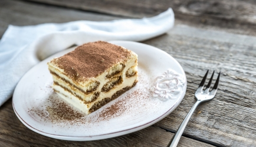

Met dit tiramisu recept zet je een verrukkelijk dessert op tafel!
Ingrediënten
1 pak lange vingers
100 gram suiker
100 mililiter water
2 eetlepels oploskoffie
1 bak slagroomijs
250 gram mascarpone
125 mililiter slagroom
0,5 eetlepel cacaopoeder
Met olie ingevette springvorm (ø 24 cm)
Een spuitzak met een glad spuitmondje
Bereidingswijze
Neem de helft van de lange vingers uit de verpakking en halveer ze. Kook de suiker met het water totdat de suiker is opgelost. Neem de pan van het vuur en roer de oploskoffie door het suikerwater.
Haal de halve lange vingers een voor een door het koffiemengsel en zet ze rechtop tegen de rand van de ingevette vorm. Haal de hele lange vingers ook door het koffiemengsel bekleed hiermee de bodem en laat alles mooi aansluiten, snijd de lange vingers zo nodig bij. Zet de met lange vingers beklede vorm 30 min. in de diepvries.
Neem de vorm uit de diepvries en schep het Hertog Romige Slagroom ijs in de vorm, druk naar alle kanten goed aan en strijk de bovenkant mooi glad. Laat de tiramisu taart zeker nog 2 uur bevriezen.
Klop de slagroom stijf en klop de mascarpone erdoor. Doe het mengsel over in de spuitzak met spuitmondje en spuit mooie dopjes op de taart. Begin in het midden en werk naar buiten toe. Of schep het mascarponemengsel op de ijstaart en strijk het met de bolle kant van een vochtige lepel over de taart uit. Bestuif de taart met cacaopoeder.

Tip:Je kunt deze tiramisu ijstaart een dag van tevoren tot en met stap 3 bereiden. Vlak voor het serveren spuit je dan de het mascarponeroom op de taart en maak je de tiramisutaart af.